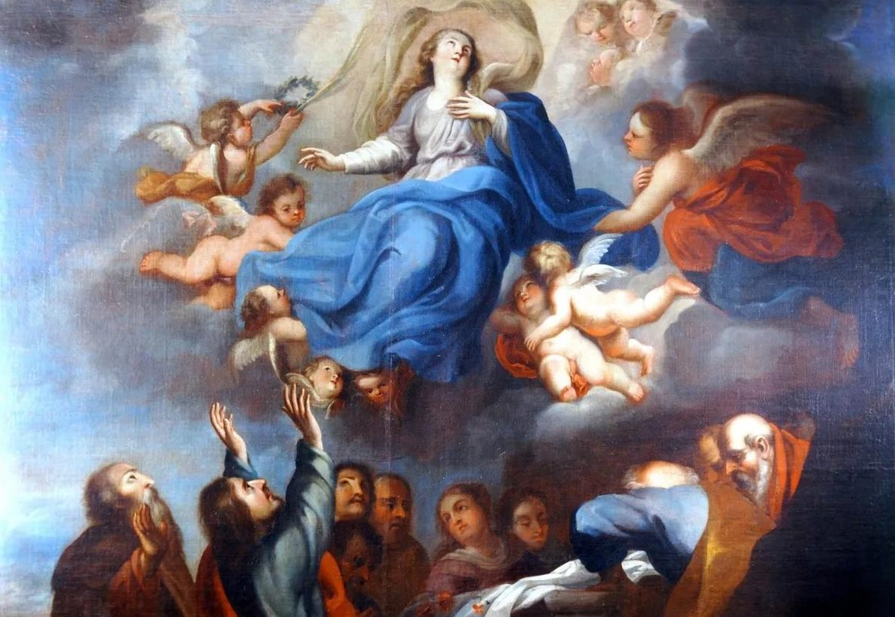
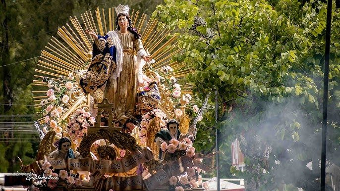

El Dogma de la Asunción y su Definición

El 1 de noviembre de 1950, festividad de Todos los Santos, el papa Pío XII pronunció desde la plaza de San Pedro las palabras que culminaban un proceso de consulta y reflexión sin precedentes en la historia de la Iglesia. Con la Constitución Apostólica Munificentissimus Deus —"El Dios generosísimo"— definió solemnemente que "la Inmaculada Madre de Dios, la siempre Virgen María, terminado el curso de su vida terrena, fue asunta en cuerpo y alma a la gloria celestial."
Lo que precedió a esa definición fue el mayor proceso de consulta episcopal de la historia de la Iglesia hasta ese momento. En 1946, Pío XII envió la encíclica Deiparae Virginis Mariae a todos los obispos del mundo —más de 1.181— preguntándoles dos cosas: si ellos mismos, con su clero y fieles, deseaban la definición dogmática, y si consideraban que la Asunción corporal de María podía ser definida como dogma de fe. La respuesta fue abrumadora: prácticamente por unanimidad —solo seis obispos expresaron reservas, por motivos ecuménicos o de oportunidad, no de fondo— los pastores de la Iglesia universal confirmaron que esta verdad pertenecía al depósito de la fe y que su explicitación como dogma era un deseo generalizado del pueblo cristiano.
El término "Asunción" —del latín assumptio, "ser tomado hacia arriba"— expresa con precisión el contenido del dogma: no fue María quien ascendió por su propia virtud al cielo, sino que fue llevada allí por Dios. Esta diferencia gramatical y teológica distingue la Asunción de María de la Ascensión de Jesús: Cristo ascendió al Padre por su propio poder divino; María fue asunta, recibió el don de la glorificación del cuerpo de manos de su Hijo. En esto, María no es autora de su propio triunfo, sino la primera beneficiaria del triunfo de Cristo sobre la muerte.
Una de las decisiones más significativas de Pío XII fue no pronunciarse sobre si María murió antes de ser asunta o si fue elevada directamente al cielo sin pasar por la muerte física. La fórmula dogmática —"terminado el curso de su vida terrena"— deja deliberadamente abierta esta cuestión. La tradición oriental subraya la "Dormición" (el sueño tranquilo de María antes de su glorificación); muchos teólogos occidentales la consideran muerta antes de la Asunción, en conformidad con el destino común de la humanidad que también Cristo asumió libremente; otros argumentan que, al estar preservada del pecado —causa de la muerte—, pudo haber sido eximida también de la muerte. El dogma garantiza la glorificación corporal sin resolver el modo en que esta se produjo.
La Asunción es el único dogma mariano que la Iglesia Católica ha definido mediante el ejercicio explícito de la infalibilidad papal —la primera vez que se ejercía desde la definición de la propia infalibilidad en el Vaticano I (1870)— y también el último dogma mariano definido hasta la fecha. Desde 1950, nada de igual rango magisterial ha sido añadido al conjunto de los dogmas marianos, aunque la devoción y la reflexión teológica siguen avanzando.
Fundamentos en la Tradición: El Sepulcro Vacío de María
La ausencia de reliquias corporales de María es uno de los argumentos históricos más consistentemente citados por los teólogos a lo largo de los siglos. En los primeros siglos del cristianismo, las reliquias de los mártires y los santos eran objeto de veneración intensa, y las iglesias competían por poseer restos sagrados. Sin embargo, no existe en la historia ningún testimonio fidedigno de que ninguna comunidad cristiana poseyera reliquias corporales de la Madre de Dios. Esta ausencia resulta llamativa en un contexto donde incluso fragmentos de tela o instrumentos de la Pasión se conservaban con gran reverencia.
En Jerusalén, el sepulcro de la Virgen en el valle del Cedrón, junto al Jardín de Getsemaní, fue venerado desde muy antiguo. La emperatriz Eudoxia mandó edificar allí una basílica en el siglo V. La tradición recuerda que el sepulcro fue hallado vacío —no contenía el cuerpo de María— y que en él solo se encontraron sus vestiduras. Este relato, transmitido en diversas fuentes patrísticas y apócrifas, guarda un paralelismo deliberado con el sepulcro vacío de Cristo en la mañana de Pascua.
La fiesta de la Dormición de María se celebraba ya en el Oriente cristiano al menos desde el siglo VI. El emperador Mauricio (582–602) fijó su celebración universal en el Imperio Romano de Oriente el 15 de agosto. Desde allí se extendió a Roma y a toda la Iglesia occidental, donde recibió el nombre de "Asunción de la Virgen". Los testimonios patrísticos son ricos: San Epifanio de Salamina (c. 315–403), aunque cauto ante la falta de datos bíblicos explícitos, ya señalaba que la incorrupción del cuerpo de María era teológicamente congruente con su maternidad divina. San Juan Damasceno (c. 676–749) ofrece en sus tres homilías sobre la Dormición los textos más desarrollados del período patrístico sobre este misterio, argumentando desde la conveniencia teológica y la tradición litúrgica.
Significado Teológico: La Primera Resucitada
Para comprender por qué la Asunción de María no es un hecho aislado sino una pieza central de la fe cristiana, hay que situarla en el arco narrativo de la salvación. La Inmaculada Concepción y la Asunción forman un díptico inseparable: María fue preservada del pecado en el principio de su existencia y, al final, fue eximida de la corrupción de la tumba. Ambas prerrogativas tienen la misma raíz: su singular relación con el misterio de la Encarnación y su papel como nueva Eva.
San Pablo, en la Primera Carta a los Corintios (15,20–23), describe a Cristo como "primicias de los que durmieron", el primero de una nueva humanidad destinada a la resurrección. La Asunción de María afirma que ella, la más cercana al misterio pascual de su Hijo —aquella que estuvo al pie de la Cruz y que aguardó con los discípulos en el Cenáculo—, es la primera en participar plenamente de los frutos de esa resurrección. María asunta es, en este sentido, la imagen anticipada de lo que la Iglesia espera para todos sus miembros: la glorificación del cuerpo, la resurrección de la carne que el Credo profesa en cada domingo.
El paralelismo con Eva es igualmente iluminador. Si el pecado de Adán y Eva introdujo en el mundo la muerte corporal, María, la nueva Eva que cooperó con el nuevo Adán en la obra de la Redención, recibe el don de no quedar sujeta a la corrupción de la tumba. No como un privilegio arbitrario, sino como la consecuencia lógica de su inmunidad del pecado y de su cooperación perfecta en la misión salvadora de Cristo.
La Constitución dogmática Lumen Gentium del Concilio Vaticano II (1964), capítulo VIII, integra admirablemente la Asunción en la eclesiología: María asunta al cielo es la imagen y el principio de la Iglesia que ha de venir, "señal de esperanza cierta y de consuelo para el pueblo de Dios en su peregrinación" (LG 68). Ver a María ya glorificada en cuerpo y alma es contemplar el destino prometido a todos los bautizados.
La Dormición en Oriente: Una Misma Fe, Distinto Acento
Las Iglesias Ortodoxas y las Iglesias Orientales Católicas celebran el 15 de agosto la Koimesis tes Theotokou —la "Dormición de la Madre de Dios"— con una intensidad devocional que no desmerece en nada a la tradición occidental. El término "dormición" (koimesis en griego, uspenie en eslavo) evoca el sueño tranquilo, el tránsito sereno de la Virgen como preludio a su glorificación.
La iconografía oriental de la Dormición es uno de los programas iconográficos más elaborados del arte cristiano. Muestra a María yacente en un lecho, rodeada de los doce apóstoles convocados milagrosamente desde los extremos del mundo, con Cristo al centro sosteniendo en brazos el alma de su Madre como un niño recién nacido —imagen de una ternura sobrecogedora que invierte el esquema de la Natividad: ahora es el Hijo quien acoge a la Madre. Sobre este grupo central se abre con frecuencia una mandorla celeste que anuncia la glorificación inminente.
La diferencia de énfasis entre Oriente y Occidente no refleja una diferencia de fe, sino de sensibilidad teológica. Oriente prefiere subrayar el tránsito apacible —la muerte como "dormición" en la paz de Dios— antes de afirmar de modo explícito la glorificación corporal, que también confiesa. Occidente, con la definición dogmática de 1950, ha fijado la atención en el destino glorioso, sin especificar si hubo o no muerte previa. El teólogo ortodoxo Georges Florovsky y otros representantes de la teología oriental han señalado que, en el fondo, la fe expresada en la Dormición oriental y en la Asunción occidental es sustancialmente la misma: el cuerpo de María está con Dios, glorificado, en plena comunión con su Hijo resucitado.
Devoción y Patronazgos en el 15 de Agosto

El 15 de agosto es una de las fechas marianas de mayor resonancia cultural y espiritual en el mundo cristiano. En Francia, donde la Asunción es fiesta nacional desde el voto del rey Luis XIII en 1638 —que consagró el reino a la Virgen María en ese día— la solemnidad se vive con particular intensidad. La catedral de Chartres, Notre-Dame de París, el Santuario de Fourvière en Lyon y decenas de iglesias dedicadas a la Asunción celebran este día con masivas peregrinaciones.
Malta, Paraguay, Guatemala, Líbano, Bélgica, Austria, Italia y muchos otros países tienen el 15 de agosto como fiesta civil. En Grecia, la Dormición de la Theotókos es el equivalente popular de la Navidad o la Pascua, y la isla de Tinos concentra cada año a decenas de miles de peregrinos que llegan en barco desde toda Grecia para venerar el icono milagroso de la Evangelístria, muchos de ellos recorriendo de rodillas el camino desde el puerto hasta la iglesia.
En el arte occidental, la Asunción inspiró algunas de las obras maestras de la pintura y la escultura renacentistas y barrocas: la Asunción de Tiziano en la Basílica de los Frari en Venecia (1516–1518), considerada el primer gran cuadro del Renacimiento veneciano; la Asunción de Guido Reni; las composiciones de Rubens, Murillo y Guercino, entre decenas de otras. La imagen de María elevándose hacia el cielo rodeada de ángeles, con los apóstoles contemplando asombrados el sepulcro vacío, se convirtió en uno de los temas iconográficos más fecundos de la cultura cristiana occidental.
Para el creyente de hoy, la Asunción no es únicamente un privilegio de María: es un mensaje de esperanza dirigido a toda la humanidad. El cuerpo humano —ese cuerpo que la cultura contemporánea maltrata, idolatra o desprecia según los casos— es digno de la eternidad. Que María esté ya con Dios en cuerpo y alma es la promesa más vívida de que la materia puede ser transfigurada por la gracia, y de que la resurrección de la carne prometida a todos los bautizados no es una metáfora, sino una realidad que ya ha comenzado a cumplirse en la Madre del Señor.